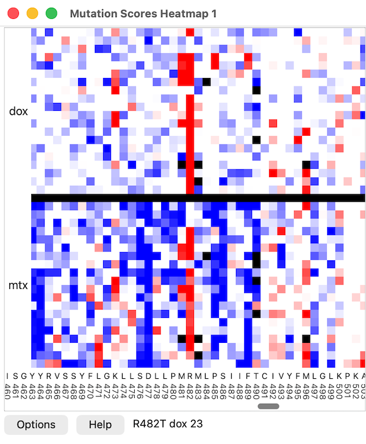
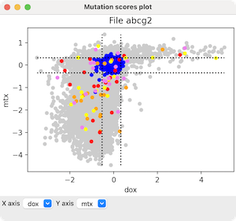
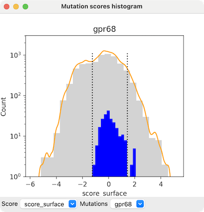
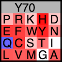

The mutationscores command shows the results of deep mutational scanning on protein structures and as interactive 2D plots. The Mutation Scores tool is the corresponding graphical interface.
Deep mutational scanning generally entails making all possible substitutions (of the 20 standard amino acids) at each position of a protein and assessing the results with multiple high-throughput assays. For example, the assays could include growing cells expressing the mutants in the presence of different drugs and measuring cell viability or fluorescence.
In this page, mutant refers to a variant of the protein defined by a specific residue type (which could be the same as the wild type) at a specific position in the sequence, and in which all of the other positions have the wild-type residue. The result of a synonymous mutation is the same amino acid as in the wild-type protein, although the nucleic acid codon could have been different.
In general, each type of assay yields a score for each mutant. The scores are read from a mutation scores .csv file (details...) that can be opened from the the File menu or with the open command. Each file gives rise to a mutation set, and multiple mutation sets can be open at the same time. A mutation set can also be fetched from the AlphaMissense database (score name amiss) or from UniProt Variants (score names PolyPhen and SIFT).
Opening a mutation scores file automatically shows the Mutation Scores tool for displaying the data as a scatter plot of the mutants with two kinds of scores as the axes, or as a heatmap or histogram of one kind of score. Each type of plot has controls for changing which scores are plotted and for which mutation set.
By default, mutation scores are automatically associated with each open structure chain that has exactly the same sequence and residue numbering (as in the mutation data) the first time some analysis action is performed, such as interacting with a plot. However, specific structure chains to associate can be designated with the chains option of the open command at the time of opening the mutation data, or later (after opening the data) with mutationscores structure.
See also: Mutation Structure Coloring, ChimeraX visualization of mutation scores
• mutationscores scatterplot x-score y-score [ colorSynonymous true | false ] [ bounds true | false ] [ correlation true | false ] [ replace true | false ] [ mutationSet name ]

Create a new heatmap or change the settings of an existing heatmap with the specified heatmapName. Default names of heatmap plots are 1, 2, (...). If an option is not specified for a new heatmap, the default is used, but for an existing heatmap, the current setting is retained. Residue positions along the chain are plotted on the horizontal axis, and amino acid types along the vertical axis. Pausing the cursor over the heatmap reports the mutation name, score name, and value in the status area next to the Help button.
The scores to include are designated as a comma-separated list of score names. The aminoAcids option specifies the top-to-bottom ordering of amino acid types as an uppercase string of amino acid 1-letter codes (the default HRKDEFWYNQILCSTVMAGP groups chemically similar types); all 20 standard types may be included, or a subset to limit the plot to only those types, and the vertical grouping when multiple scores are plotted can be by score (score name, default) or by amino acid type. The residues option allows limiting the plot to only the specified residues, and the labelEveryResidue option specifies whether to label each horizontal position instead of at intervals (default false)
Each mutation is represented by a colored square, with pixelsPerCell specifying the side length of each square in pixels (default zoom = 2). The coloring palette is given as a colormap with value,color pairs (default -2,blue:-1,white:1,white:2,red) and the color for missing data specified with the missingValueColor option (default black
). Data value units are standard deviations above (positive) or below (negative) the mean if normalizeScores is true (default); otherwise, the raw values from the data file will be used. The mean and standard deviation are computed separately for each score using synonymous mutations only, or if there are no synonymous mutations, all mutations. Since only a single colormap is used for the whole heatmap, if raw scores are used, all of the scores should have comparable ranges, either inherently or because they were normalized prior to being written to the input file. The subtractFit option allows subtracting from all scores a linear fit using a specified score. For instance, for a membrane receptor with scores representing activity in the presence of different drugs, a linear fit of drug score versus a cell surface expression score can be subtracted to compensate for different abundance of the receptor on the cell membrane. A least-squares fit is used between drug and surface score.
There can be crosstalk between the heatmap and associated structures. The grayMissing option (default false) indicates whether to use the grayoutColor (default #CCCCCC
) to modulate the heatmap cell color where the associated atomic structure is missing residues. If multiple chains are associated, then mutations are grayed if none of the chains have the mutated residue. The dragToColor option indicates whether dragging a box with the mouse on the heatmap should color the associated structure residues and atoms (default true, with dragboxColor of yellow
and dragboxLinewidth of 3 pixels). By holding the Shift key, multiple boxes can be drawn on the heatmap, and they can be different colors. Clicking on a mutation will color a single residue, and clicking outside the heatmap (such as on the axes) will clear the boxes and revert the residues to their original colors. The colorResidueOnHover option whether placing the mouse over the heatmap colors the associated structure residues (default off, with hoverColor of yellow
). No mouse button needs to be pressed, and the coloring of the structure changes immediately when the mouse moves over another mutation. This facilitates exploring the correspondence between heatmap and structure positions.
Setting showOptions to true (default false) shows the options in the heatmap plot window. The size option gives the pixel dimensions of the visible part of the heatmap within the plot window. The saveImage option saves the entire heatmap, including axis scales, to a PNG image file with pathname specified directly or as the word browse to specify it interactively in a file browser window.
The mutationSet option allows specifying which dataset to use when more than one is open. If only one is open, the option is not needed. The name of a mutation set is derived from the input filename (for example, abcg2 if read from abcg2.csv). The names of open sets can be listed in the Log with mutationscores list, and a set can be closed with mutationscores close.
Currently, a heatmap can only include scores from a single mutation set. See heatmap details.
• mutationscores define [ new-score ] [ fromScoreName from-score ] [ aa one-letter-codes ] [ toAa one-letter-codes ] [ synonymous true | false ] [ above value ] [ below value ] [ ranges comparison-expression ] [ combine count | mean | stddev | sum | sum_absolute ] [ setAttribute true | false ] [ subtractFit sub-score ] [ mutationSet name ]

Show a scatter plot of mutants for two scores, x-score and y-score. Only mutants with values for both scores will be plotted. The colorSynonymous option indicates whether to color in blue all circles for “mutants” that have the same residue type as the wild-type protein (default true) and the bounds option indicates whether to show dashed lines delimiting mean ± 2 standard deviations of their values (default true). The correlation option indicates whether to draw a line showing the least-squares fit (default false). The scatter plot will replace a pre-existing scatter plot unless replace false is given.
Menus below the plot can be used to change which scores are plotted on the X- and Y-axes and for which mutation set. Placing the cursor over a plotted point (circle) reports the specific mutation and its score values at the bottom of the panel.
See scatterplot details.
A new score can be computed from one or more of the existing scores with mutationscores define and then used in other mutationscores analyses just like any of the original scores. The mutationscores define command without any arguments will list the existing score names (same as mutationscores list), and mutationscores undefine can be used to delete a score.• mutationscores color attribute-nameA new score can also define an interesting subset of the mutations. The aa and toAa options limit the mutations to specific “before and after” (before and after mutation) amino acid types. Specifying synonymous true limits the “mutations” to those in which the before and after amino acids are the same (wild-type). The above and below options limit the mutations to those within a given range of a single type of score specified with fromScoreName from-score. This can also be achieved more flexibly, potentially involving more than one type of score, with the ranges option, which specifies a boolean expression involving any existing score names along with "and", "or", "not", ">", ">=", "<", "<=", "!=", and "==" operators and parentheses, for example, "mtx <= -1.5 and sn38 >= 1.0".
A per-residue score has only a single value per position in the sequence. Several options create per-residue scores: synonymous true, or combine, or toAa with a single amino acid type specified. The combine option combines the scores for all mutations at a given position using the specified operation. With setAttribute true (default), defining a per-residue score assigns an attribute with the same name as the score to the associated structure residues. An attribute can be shown with coloring and used in selection and and command-line specification.
The subtractFit option performs a linear least-squares fit of the from-score to the sub-score and subtracts the linear values from the from-score values. The typical use of this would be to normalize a score. For instance, if the from-score is a cell growth measure in response to a drug and the sub-score is a surface expression score for the protein, then the subtraction attempts to normalize the drug response to account for the different amounts of protein reaching the membrane. A limitation of this simplistic normalization, however, is that the variation in response might not be a linear function of the quantity of surface-expressed protein.
Reapply a previously defined coloring by mutation score to the associated structure(s). A mutation-score attribute must have been created with mutationscores define (which assigns an attribute-name same as the score name) and coloring by that attribute previously applied using the Render by Attribute tool or the color byattribute command.• mutationscores histogram score [ scale linear | log ] [ bins b ] [ curve true | false ] [ smoothWidth w ] [ smoothBins sb ] [ synonymous true | false ] [ bounds true | false ] [ replace true | false ] [ mutationSet name ]
• mutationscores label residue-spec score [ palette palette ] [ range low,high | full ] [ noDataColor color-spec ] [ height h ] [ offset x,y,z ] [ onTop true | false ] [ mutationSet name ]

Show a histogram of mutation scores, with bar-height scaling either linear or log (default log). The number of bins b in the histogram defaults to 20. With curve true (default), a smooth curve is drawn in orange by approximating the histogram with a Gaussian convolution using smoothWidth w (default 10% of the standard deviation of the score) and smoothBins sb (default 200). The synonymous option indicates whether to show blue histogram bars for the “mutants” that have the same residue type as the wild-type protein (default true) and the bounds option indicates whether to show dashed lines delimiting mean ± 2 standard deviations of their values (default true). The histogram will replace a pre-existing histogram unless replace false is given. The menus below the histogram can be used to change which score is plotted and for which mutation set.
See histogram details.
• mutationscores statistics score [ type all | synonymous ] [ mutationSet name ]Label each of the specified residues in the associated structure(s) with a grid of all possible substitutions (the 20 standard amino acids) color-coded by the values of the score at that position. The coloring defaults are:

palette redblue range full... meaningacross the full range of values (including the values of residues not being labeled). A narrower range can be specified as comma-separated values low,high. The noDataColor is used for residues without mutation scores (default
).
The label height h defaults to 1.5 Å. The offset x,y,z is the position of the lower left corner of the grid relative to the residue's α-carbon along X, Y, and Z in screen coordinates (default 0,0,3 Å). The onTop setting is whether to draw the labels on top of other objects regardless of their relative positions in 3D (default false). The labels can be removed with label delete.
Compute the mean and standard deviation of a score. The statistics are reported in the Log. By default, only the scores of synonymous mutants (proteins with the same amino acid sequence as the wild type) are included, but type all can be used to include the scores of missense mutants as well.• mutationscores umap score [ mutationSet name ]
Project the 20-dimensional vector of the scores of the 20 amino acid types at each sequence position into 2D using UMAP (Uniform Manifold Approximation and Projection). In the UMAP plot, each sequence position is shown as a circle labeled with the residue number and colored by the wild-type residue (20 distinct colors for the 20 residue types). Only positions at which all 20 residue types have scores are plotted. This is an experimental feature and thus far, has not revealed any striking patterns.• mutationscores structure chain-spec [ allowMismatches true | false ] [ alignSequences true | false | alignment-ID | sequence ] [ minimumPercentIdentity percent-ID ] [ mutationSet name ]
Designate one or more structure chains to be associated with the mutation scores for further analysis. Otherwise, the mutation scores will be associated automatically with each open structure chain that has exactly the same sequence and residue numbering (as in the mutation data) the first time some analysis action is performed, such as interacting with a scatter plot. Multiple structure chains can be associated per mutation set. If the chain does not have exactly the same residue types as the wild type in the mutation data, however, allowMismatches true is needed to force the association, and if the residue numbering is different, the alignment should be specified with the alignSequences option, with possible values:• mutationscores list
- true – align the sequence determined from the mutation data (using X for any missing residues) with the specified structure chain using the Needleman-Wunsch algorithm; if multiple structure chains are specified, attempt aligning with each and discard those with less than minimumPercentIdentity percent-ID (default 50%)
- false – same as omitting the alignSequences option
- a sequence alignment aleady open in the Sequence Viewer, specified by the alignment-ID shown in the title bar of that tool. The first sequence in the alignment must be the same as the sequence that goes with the mutation data, and there must also be a sequence that exactly matches (including numbering) each of the structure chains to be associated. If multiple structure chains to be associated have the same sequence, the alignment only needs to contain one copy, and the alignment may also contain additional sequences not used for association purposes.
– or –
- the sequence that goes with the mutation data, to be aligned to the sequence(s) of the specified structure chain(s) using the Needleman-Wunsch algorithm. As with sequence align, a sequence can be given as:
- a UniProt name or accession number
- the chain-spec of a structure chain already open in ChimeraX
- plain text of the entire amino acid sequence pasted directly into the command line
- the sequence-spec of a sequence in the Sequence Viewer, in the form: alignment-ID:sequence-ID (details...)
The allowMismatches option defaults to true if alignSequences is used, otherwise false.
Associations can also be specified with the chains option of the open command at the time of opening the mutation scores file.
List the names of the currently available score sets in the Log. The names are derived from the input filenames (for example, abcg2 if read from abcg2.csv). A set can be closed with mutationscores close.• mutationscores close [ mutation-set-name ]
Close a specified set of mutation scores. The names of currently open sets can be listed in the Log with mutationscores list.